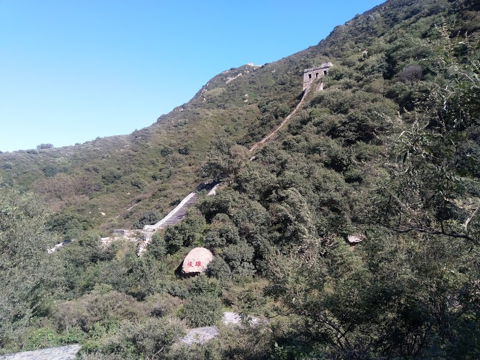

发信人: chief (highwayman), 信区: outdoor
标 题: 长城 － 西栅子段 + 八大岭残段
发信站: 饮水思源 (2018年09月30日22:08:33 星期天)
google earth 长城数据 － http://www.thegreatwall.com.cn/public/TheGoogleGreatWall/
本次回国两个周末爬了两段长城。
西栅子段鹰飞倒仰到北京节在修葺。还有人太多，塑料垃圾很多。看到林赛一家子在召集
志愿者捡垃圾。
长城北京占8%，山西占30%，河北占20%。下次要去走山西的。
去往西栅子的范崎路
screen.width - 200){this.width = screen.width - 200}">
西栅子地图：
screen.width - 200){this.width = screen.width - 200}">
西栅子段：
鹰飞倒仰：
screen.width - 200){this.width = screen.width - 200}">
天梯俯瞰
screen.width - 200){this.width = screen.width - 200}">
佛头：
screen.width - 200){this.width = screen.width - 200}">

八达岭段：
 screen.width - 200){this.width = screen.width - 200}">
第一敌楼
screen.width - 200){this.width = screen.width - 200}">
screen.width - 200){this.width = screen.width - 200}">
screen.width - 200){this.width = screen.width - 200}">
秋虫：
screen.width - 200){this.width = screen.width - 200}">
screen.width - 200){this.width = screen.width - 200}">
--
I wander lonely as a cloud.
※ 来源:·饮水思源 bbs.sjtu.edu.cn·[FROM: 2406:3003:2004:f2c:fd2e:269a:591:cf03]
※ 修改:·chief 于 2018年09月30日22:12:59 修改本文·[FROM: 2406:3003:2004:f2c:fd2e:269a:591:cf03]
|